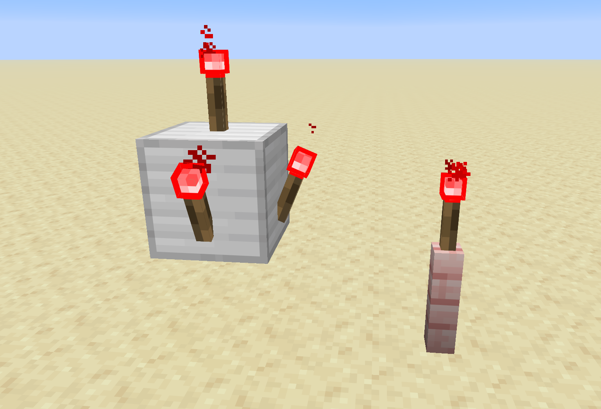
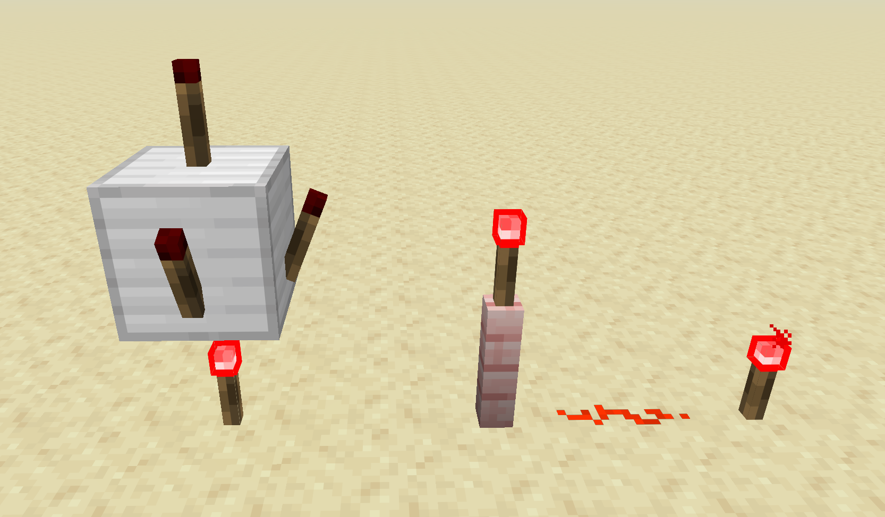

Redstone torches are vital components of almost any redstone project. They serve as power sources that emit a signal strength of 15 to adjacent redstone components, such as redstone dust. They are also commonly used in logic gates, as they are always powered on by default, but turn off if they receive a signal.
Redstone torches can be placed on top of most blocks. Any block that a regular torch can be placed on, a redstone torch can also be placed on. As such, they can also be placed on the sides of blocks, but they cannot be placed on the bottom surface of anything.
The torch will power the space around it and above it, but not the block on which it is placed.

Redstone torches can be placed on the sides of blocks, as well as on top of blocks, including some non-full blocks.
A redstone torch can receive power if a signal is given directly into the block it is placed on. When this happens, the torch will power off.
Remember that most non-full blocks are not conductive. Even if a torch is able to be placed on a nonconductive block, it will not receive power if the block it is on is a nonconductive block.

The torch under the iron block powers the block above it, turning off the torches that are placed on that block. The fence post cannot receive power, so the torch remains on.